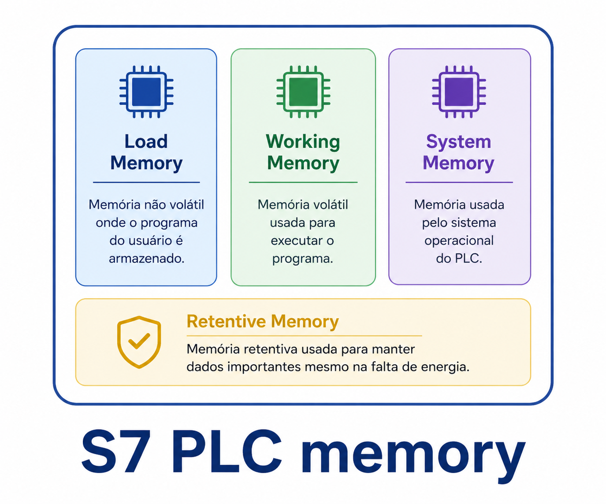
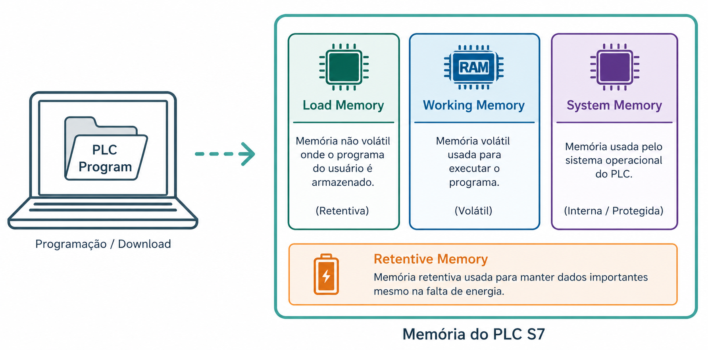
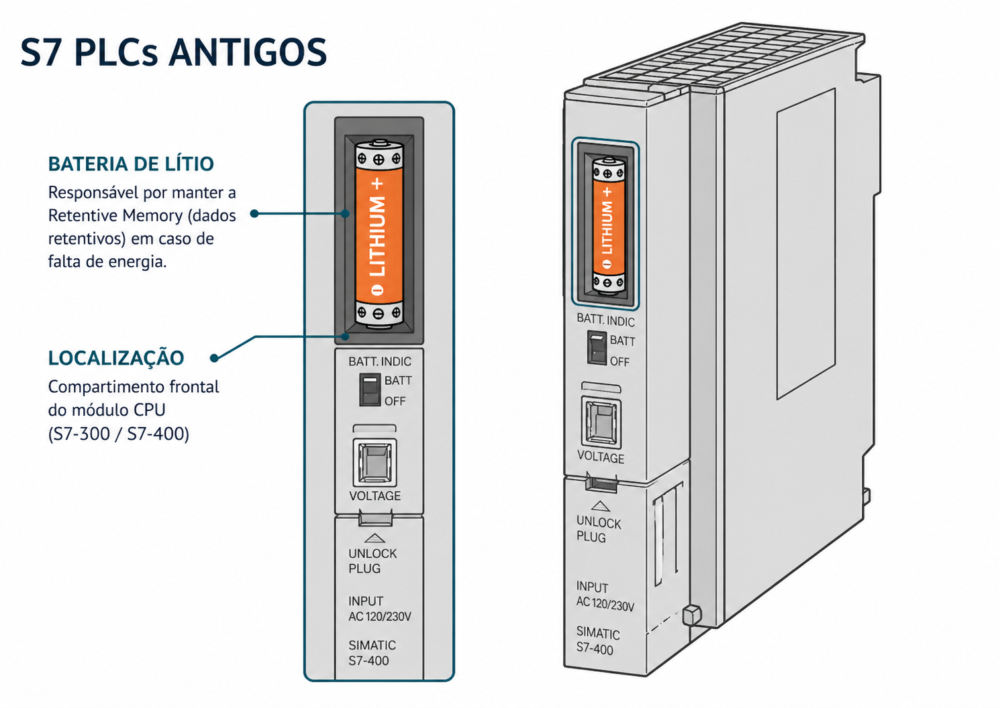
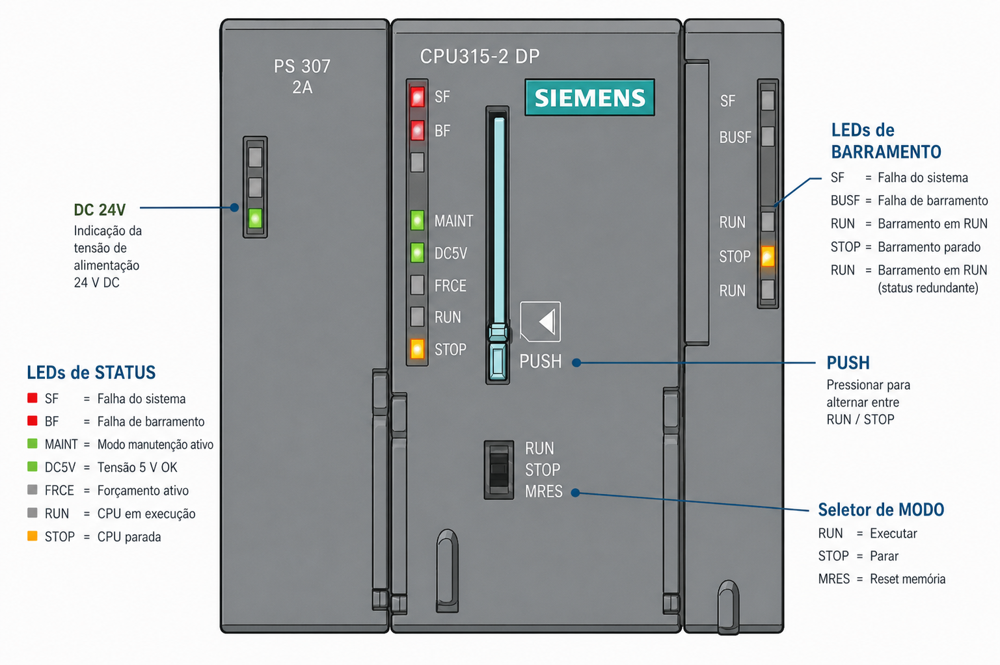

Texto Explicativo
Revisão: Os Dois Grandes Grupos de Memória
Antes de analisar a estrutura interna de memória de um CLP, é fundamental consolidar a distinção entre os dois grandes grupos de memória presentes em sistemas computacionais:
O primeiro grupo é composto pelas memórias não voláteis, que retêm seus dados mesmo na ausência de alimentação elétrica. Um exemplo cotidiano é o pendrive ou cartão Flash, que preserva arquivos indefinidamente sem necessidade de energia. O segundo grupo compreende as memórias voláteis, como a RAM, que perdem todo o conteúdo armazenado imediatamente quando a energia é interrompida.
Essa distinção é essencial para compreender as decisões de projeto da memória dos CLPs, especialmente no que diz respeito à segurança e à integridade do programa de controle diante de falhas de energia.
A Estrutura de Memória do CLP S7
A memória de uma CPU da família Siemens S7 é organizada em quatro áreas funcionais distintas, cada uma com propósito e características específicas:
- Memória de Carga (Load Memory)
- Memória de Trabalho (Working Memory)
- Memória do Sistema (System Memory)
- Memória Remanente (Retentive Memory)

Este capítulo aprofunda o estudo da Memória de Carga, a primeira e uma das mais importantes dessas áreas, abordando sua evolução tecnológica e os aspectos práticos que o técnico deve conhecer.
Memória de Carga (Load Memory)
A Memória de Carga é a área responsável por armazenar o programa completo transferido do computador para a CPU do CLP. Quando o engenheiro ou técnico desenvolve um programa no software de programação (como o STEP 7 ou o TIA Portal) e realiza o download para a CPU, é na Memória de Carga que esse programa é gravado e mantido.
Em termos práticos, a Memória de Carga funciona de maneira análoga ao disco rígido de um computador: ela guarda o programa de forma persistente, de onde ele poderá ser carregado para execução sempre que necessário. Assim como um computador precisa de um disco para armazenar o sistema operacional e os programas, a CPU do CLP precisa da Memória de Carga para guardar o programa de controle.

Evolução da Memória de Carga: Interna vs. Externa
A forma como a Memória de Carga é implementada nas CPUs S7 passou por uma evolução tecnológica significativa ao longo das gerações de equipamentos.
Memória de Carga Interna — CPUs de Gerações Antigas
Nas primeiras gerações de CLPs S7, a Memória de Carga era interna à CPU, implementada em RAM. Como a RAM é uma memória volátil, o programa armazenado era perdido sempre que a alimentação elétrica era interrompida — seja por uma falta de energia não planejada ou por uma manutenção programada.
Para contornar essa limitação e garantir a integridade do programa mesmo sem energia, os CLPs dessa geração utilizavam uma bateria de backup instalada no próprio módulo da CPU. Essa bateria mantinha a RAM energizada mesmo com o CLP desligado, preservando o programa armazenado. No entanto, essa solução apresentava desvantagens práticas importantes:
- A bateria possui vida útil limitada e exige substituição periódica como parte do plano de manutenção preventiva.
- A falha da bateria sem o devido monitoramento poderia resultar na perda do programa durante uma falta de energia.
- O custo e a logística de manutenção das baterias representavam um encargo adicional ao longo da vida útil do equipamento.

Memória de Carga Externa — CPUs Modernas
Nas CPUs modernas da família S7, a Memória de Carga passou a ser externa, implementada por meio de um cartão de memória removível denominado MMC (Micro Memory Card — Micro Cartão de Memória). Esse cartão é adquirido separadamente da CPU e inserido em um slot específico presente no painel frontal do módulo.
O MMC é um dispositivo de memória Flash EEPROM — a mesma tecnologia utilizada em cartões de memória de câmeras digitais, smartphones e pendrives. Por ser uma memória não volátil, o MMC retém o programa de controle de forma completamente estável, mesmo em caso de interrupção da energia, sem necessidade de qualquer bateria de backup.

Essa mudança representa uma evolução prática significativa:
Características e Importância do MMC
O cartão MMC, além de eliminar a necessidade de baterias de backup, introduz outras vantagens funcionais relevantes para a operação e manutenção do sistema:
Portabilidade do programa: como o cartão é removível, é possível retirar o MMC de uma CPU, inseri-lo em outra CPU do mesmo modelo e transferir o programa sem necessidade de conexão ao computador de programação. Isso facilita imensamente a substituição de CPUs defeituosas em campo.
Capacidade de armazenamento ampliada: os cartões MMC disponíveis no mercado oferecem diferentes capacidades de memória, permitindo armazenar programas maiores e mais complexos do que os suportados pelas memórias internas das gerações anteriores.
Segurança e estabilidade: por ser baseado em tecnologia Flash, o MMC é imune à perda de dados por falta de energia, tornando o sistema mais confiável em ambientes industriais sujeitos a instabilidades na rede elétrica.
O MMC como Requisito Obrigatório para Operação da CPU
Um aspecto prático de extrema importância que todo técnico deve ter em mente é que, nas CPUs S7 modernas, a presença do cartão MMC é obrigatória para o funcionamento da CPU. Sem o MMC inserido no slot correspondente, a CPU simplesmente não opera.
A razão é direta: como o MMC substitui a Memória de Carga interna, ele é o único local onde o programa de controle está armazenado. Sem o cartão, a CPU não tem acesso ao programa e, consequentemente, não tem nada para processar e executar. É como tentar inicializar um computador sem disco rígido ou pendrive de boot — sem a fonte do programa, o sistema não pode operar.
Esse conhecimento é fundamental em situações práticas como:
- Instalação de nova CPU: o cartão MMC com o programa deve ser inserido antes da energização.
- Substituição de CPU em campo: ao trocar uma CPU defeituosa, o técnico deve transferir o MMC da CPU antiga para a nova, ou ter em mãos um MMC com o programa já gravado.
- Diagnóstico de CPU que não inicializa: uma das primeiras verificações deve ser a presença e a correta inserção do cartão MMC.
Exemplo Prático Aplicado
Cenário: Substituição de CPU em uma Linha de Produção Industrial
Uma fábrica de autopeças opera uma linha de solda robótica controlada por um CLP Siemens S7-300 com CPU 315-2 DP. Durante a madrugada, o técnico de plantão identifica que a CPU apresenta falha de hardware (LED de erro aceso de forma permanente) e o sistema não responde. É necessário substituir a CPU com o menor tempo de parada possível.
Passo 1 - Confirmação da falha e preparação
O técnico confirma que a falha é na CPU e não em outros módulos. Verifica no estoque que há uma CPU 315-2 DP reserva disponível. Anota o modelo exato da CPU em uso para garantir a compatibilidade.
Passo 2 - Identificação do cartão MMC
Antes de desligar o sistema, o técnico verifica que a CPU com falha possui um cartão MMC inserido no slot frontal. Esse cartão contém o programa de controle completo da linha de solda.
Passo 3 - Desligamento seguro do sistema
O técnico move a chave seletora da CPU para a posição STOP, garantindo que todas as saídas sejam desativadas antes de desligar a alimentação do painel. Em seguida, desliga o disjuntor geral do CLP.
Passo 4 - Remoção da CPU defeituosa e do cartão MMC
Com o sistema sem energia, o técnico remove o cartão MMC da CPU defeituosa com cuidado, identificando-o com uma etiqueta. Em seguida, solta os parafusos de fixação e remove a CPU do rack.
Passo 5 - Instalação da CPU reserva
A nova CPU é encaixada no rack no mesmo slot e fixada. O técnico então insere o cartão MMC na nova CPU, no slot identificado no painel frontal do módulo. Sem esse passo, a CPU não funcionará.
Passo 6 - Energização e verificação
O disjuntor é religado. A nova CPU inicializa, lê o programa armazenado no cartão MMC e entra em operação. O técnico verifica os LEDs: PWR aceso e STOP aceso (aguardando comando). Move a chave para RUN-P — o LED RUN acende e o sistema retoma a operação normal.
Passo 7 - Validação operacional
O técnico monitora o sistema por alguns ciclos de produção para confirmar que todos os robôs e dispositivos estão operando conforme esperado. A substituição foi concluída sem necessidade de reconexão ao computador de programação, graças à portabilidade do cartão MMC.
Questões de Múltipla Escolha
-
A Memória de Carga (Load Memory) de um CLP S7 tem como função principal:
A) Executar o programa de controle durante o ciclo de varredura da CPU
B) Armazenar o programa completo transferido do computador para a CPU
C) Registrar os estados atuais das entradas e saídas durante a operação
D) Gerenciar a comunicação entre a CPU e os módulos de I/O do rack
-
Por que as CPUs S7 antigas com Memória de Carga em RAM necessitavam de bateria de backup?
A) Para manter a CPU aquecida e evitar danos por variações de temperatura
B) Para alimentar o circuito de comunicação com o software de programação
C) Porque a RAM é volátil e perderia o programa armazenado em caso de falta de energia
D) Para garantir que o modo RUN-P permanecesse ativo mesmo sem alimentação principal
-
O cartão MMC (Micro Memory Card) utilizado nas CPUs S7 modernas é baseado em qual tecnologia de memória?
A) RAM estática, com bateria interna integrada ao cartão
B) ROM convencional, programada pelo fabricante de forma permanente
C) Flash EEPROM, uma memória não volátil reescrevível eletricamente
D) EEPROM apagável por luz ultravioleta, reprogramável em laboratório
-
Qual das alternativas representa uma vantagem direta da substituição da Memória de Carga interna em RAM pelo cartão MMC nas CPUs S7 modernas?
A) A CPU passa a operar mais rapidamente, pois o Flash é mais veloz que a RAM
B) Elimina-se a necessidade de bateria de backup, pois o MMC retém dados sem energia
C) O programa passa a ser executado diretamente do MMC, reduzindo o uso de memória de trabalho
D) A CPU pode agora operar sem alimentação elétrica por até 72 horas usando a energia do MMC
-
O que acontece se uma CPU S7 moderna for energizada sem o cartão MMC inserido no slot correspondente?
A) A CPU entra automaticamente em modo de segurança e executa um programa de emergência interno
B) A CPU opera normalmente por até 30 minutos utilizando a memória de trabalho interna
C) A CPU não opera, pois sem o MMC não há programa de controle disponível para processamento
D) A CPU solicita ao operador que insira um programa via porta de comunicação antes de inicializar
-
Um técnico precisa substituir uma CPU S7 moderna defeituosa por uma nova do mesmo modelo. Qual ação é imprescindível para que a nova CPU execute o programa de controle sem necessidade de reconexão ao computador de programação?
A) Realizar o download do programa via cabo USB diretamente da CPU antiga para a nova
B) Transferir o cartão MMC da CPU defeituosa para a nova CPU antes de energizar o sistema
C) Configurar manualmente os parâmetros de rede na nova CPU antes de inserir qualquer cartão
D) Substituir também o módulo de alimentação, pois ele armazena uma cópia de segurança do programa
-
Em que aspecto a Memória de Carga de um CLP S7 se assemelha funcionalmente ao disco rígido de um computador?
A) Ambos utilizam tecnologia RAM para garantir velocidade máxima de acesso aos dados
B) Ambos armazenam dados de forma permanente e são a fonte do programa carregado para execução
C) Ambos requerem bateria de backup para reter dados em caso de falta de energia
D) Ambos são memórias somente de leitura, não permitindo atualização do conteúdo armazenado
-
Um técnico de manutenção recebe o alerta de que a bateria de backup de um CLP S7 antigo precisa ser substituída. Qual é o risco imediato se a bateria não for trocada em tempo hábil?
A) A CPU começará a operar em modo STOP automaticamente para preservar o programa
B) O cartão MMC será corrompido irreversivelmente, exigindo a compra de um novo
C) Em caso de falta de energia, o programa armazenado na Memória de Carga (RAM) será perdido
D) A CPU passará a executar o programa com erros crescentes até a falha total do sistema
-
Qual das quatro áreas de memória do CLP S7 é responsável por armazenar o programa baixado do computador?
A) Memória de Trabalho (Working Memory)
B) Memória do Sistema (System Memory)
C) Memória Remanente (Retentive Memory)
D) Memória de Carga (Load Memory)
-
Um engenheiro deseja transferir o programa de controle de um CLP S7 moderno para outro equipamento idêntico localizado em outra unidade da fábrica, sem utilizar o computador de programação. Qual recurso torna isso possível de forma direta?
A) A porta Profinet da CPU, que permite transferência direta entre CPUs via cabo de rede
B) O cartão MMC, que pode ser removido de uma CPU e inserido em outra do mesmo modelo
C) O modo RUN-P da CPU, que habilita a cópia automática do programa via barramento do rack
D) A Memória Remanente, que armazena uma cópia compactada do programa para transferência
Gabarito
1 - B | 2 - C | 3 - C | 4 - B | 5 - C | 6 - B | 7 - B | 8 - C | 9 - D | 10 - B